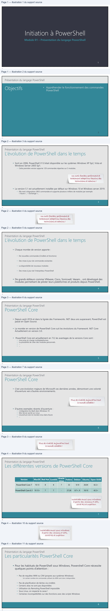
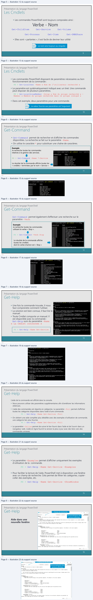
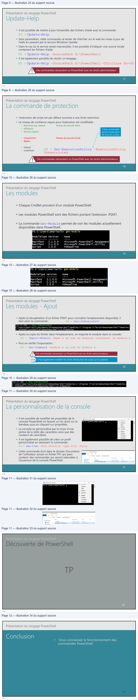

Transcription du document du Drive TSSR. La mise en forme est adaptée au Web ; les compléments IA du portail sont présentés séparément.
Module 01 – Présentation du langage PowerShell
1
1
Présentation du langage PowerShell
2
2
Présentation du langage PowerShell
• Sorti en 2006, PowerShell V1.0 était disponible sur les systèmes Windows XP Sp2, Vista et
Windows Server 2003 Sp1.
• Cette première version apporte 129 commandes réparties sur 5 modules.
Un outil flexible, performant et
totalement adapté aux besoins des
techniciens et admins !
• La version 5.1 est actuellement installée par défaut sur Windows 10 et Windows server 2019.
• Elle met à disposition 2855 commandes et supporte plusieurs milliers de modules par exemple
« Azure », « Exchange »...
3
3
Présentation du langage PowerShell
• Chaque montée de version apporte :
• De nouvelles commandes (Cmdlets et fonctions)
• Des mises à jour de commandes existantes
• La disponibilité de nouveaux modules
• Des mises à jour de l’interpréteur PowerShell
• De grands éditeurs comme VMware, Cisco, Sonicwall, Veeam… ont développé des
modules permettant de piloter leurs plateformes et produits depuis PowerShell.
4
4
—
Présentation du langage PowerShell
• Depuis août 2016 et dans la lignée des Frameworks .NET deux ans auparavant, PowerShell est
passé en Open Source.
• La montée en version de PowerShell Core suit les évolutions du Framework .NET Core
Actuellement en version 3.0.
•
PowerShell Core est actuellement en 7.0, les avantages de la versions Core sont :
• Une prise en charge multiplateformes.
• La possibilité de créer des modules personnels.
• ...
• …
5
5
Présentation du langage PowerShell
• C’est une évolution majeure de Microsoft ces dernières années, démontrant une volonté
d’ouverture vers d’autres environnements.
Plus de rivalité, aujourd’hui tout
le monde cohabite !
• D’autres exemples récents d’ouverture :
• L’intégration du Bash dans Windows 10
• SQL Server porté sur Linux
• L’ouverture vers le monde Linux dans Azure
• …
6
6
_
Présentation du langage PowerShell
Version
MacOS Red Hat CentOS Oracle
Linux
Fedora
Debian
Ubuntu Open SUSE
PowerShell Core 7
10.13
8
8
7
32
9,10
20,04
42.2+
PowerShell Core 6.1
10.12+
7
7
-
27,28
8.7+, 9
18.10
42.2+
Installable aussi sous Windows
à partir des versions 7 SP1,
2008 R2 et supérieur.
7
7
Présentation du langage PowerShell
• Pour les habitués de PowerShell sous Windows, Powershell Core nécessite
quelques points d’attention :
• Pas de requêtes WMI ou CIM (propres aux systèmes Windows)
•
Un certain nombre de commandes utilisant du WMI sont donc indisponibles
• Pas de planification de tâches via cmdlets
• Certains alias ne sont pas disponibles
• Utilisation du Remoting PowerShell impossible
• Sous Linux, on respecte la casse !
• Certaines incompatibilités sur des fonctions avec des scripts Windows
8
8
—
| Version | MacOS | RedHat | CentOS | Oracle Linux | Fedora | Debian Ubuntu OpenSUSE |
| PowerShellCore7 | 1013 . | 8 | 8 | 7 | 32 | 910 2004 422+ , , . |
| PowerShellCore61 . | 1012+ . | 7 | 7 | - | 2728 , | 87+ 9 1810 422+ . , . . |
| InstallableaussisousWindows | ||||||
| àpartirdesversions7SP1 , | ||||||
| 2008R2etsupérieur . | ||||||
| 7 |

Présentation du langage PowerShell
• Les commandes PowerShell sont toujours composées ainsi :
Get-ChildItem
Get-Service
Get-Volume
Get-Process
Get-Item
Get-SMBShare
• Elles sont « parlantes », il est facile de deviner leur utilité
Le nom sera toujours au singulier
9
9
Présentation du langage PowerShell
• Les commandes PowerShell disposent de paramètres nécessaires au bon
fonctionnement de la commande :
PS > Get-LocalUser -Name « Nom de l’utilisateur recherché »
• Le paramètre est systématiquement indiqué avec un tiret. Une commande
peut disposer de plusieurs paramètres.
PS > Get-LocalGroupMember –Group « Nom du groupe recherché » - Member « Membre du groupe recherché dans le groupe indiqué »
• Dans cet exemple, deux paramètres pour une commande.
La valeur fournie aux paramètres est l’argument
10
10
Présentation du langage PowerShell
• Get-Command permet de rechercher et d’afficher les commandes disponibles. La recherche se fait sur le paramètre –Name. • On utilise le caractère * pour substituer une chaîne de caractères.
Exemple
Je recherche toutes les commandes
relatives à la gestion des services.
PS > Get-Command -Name *-Service
Le résultat de la commande affiche toutes les
« cmdlets » terminées par le nom « Service »
11
11
Présentation du langage PowerShell
Get-Command permet également d’effectuer une recherche sur le paramètre –Verb.
Exemple
Je recherche toutes les commandes
utilisant le verbe « Stop ».
PS > Get-Command -Verb Stop
Le résultat de la commande affiche
toutes les cmdlets
dont le verbe d’action est « Stop »
12
12
PS C:\Users\amariault>
get-command
*-service
CommandType
Name
+
Cmdlet
Get-Service
Cmdlet
New-Service
Cmdiet
Restart-Service
Cmdlet
Resume-Service
Cmdlet
Set-Service
cmd let
Start-Service
icmdlet.
Stop-Service
cmd let
Suspend-Service
Ps C:\Users\amariault>
get-command
stop.
commandType
Name
Function
stop-DscConfi guration
Function
Stop-Dtc
Function
Stop-DtcTransactionsTracesession
Function
Stop-EtwTraceSession
Function
Stop-NetEventSession
Function
Stop-PcsvDevice
Function
Stop-ScheduledTask
Function
Stop-StorageDiagnosticLog
Function
Stop-StorageJob
Function
Stop-Trace
cmd let
Stop-AppvCl ientConnectionGroup
cmd let
Stop-AppvClientPackage
cmd let
Stop-Computer
cmd let
Stop-DtcDiagnosticResourceManager
=>
cmd let
Stop-Job
cmd et
Stop-Process
cmd let
Stop-Service
cmd let
Stop-Transcript
Présentation du langage PowerShell
• Une fois la commande trouvée, il nous faut comprendre comment l’utiliser. • La solution est bien connue, il faut lire le manuel. • Toute Cmdlet comporte un manuel. Il est disponible avec la commande : Get-Help suivi du paramètre –Name « La Cmdlet concernée »
PS > Get-Help -Name Get-Service
13
13
Présentation du langage PowerShell
L’aide de la commande est affiché dans la console.
• Nous pouvons utiliser des paramètres supplémentaires afin d’améliorer les informations
obtenues.
• L’aide des commandes est répartie en catégories. Le paramètre -Full permet d’afficher toutes les catégories disponibles dans l’aide d’une commande.
PS > Get-Help -Name Get-Service -Full
• On obtient une aide complète plus détaillée avec des exemples d’utilisation de commande,
une catégorie lien plus fournie.
PS > Get-Help -Name Get-Service -Full
• Le paramètre -Online permet de suivre le lien fourni dans l’aide et de l’ouvrir dans un navigateur web. L’aide en ligne fournit la version la plus à jour avec des liens vers des commandes annexes.
14
14
Now
Get-Service
Resume
YNTAXE
[-Requiredservices]
[<ConmonParaneters>]
ESCRIPTION
Restart-service
Présentation du langage PowerShell
• Le paramètre -Examples permet d’afficher uniquement les exemples d’utilisation de la commande.
PS > Get-Help -Name Get-Service -Examples
• Pour faciliter la lecture de l’aide, PowerShell met à disposition une fenêtre
avec un champ de recherche. Cela permet de filtrer les catégories, copier-
coller des exemples, etc.
PS > Get-Help –Name Get-Service -ShowWindow
15
15
Présentation du langage PowerShell
Champ de recherche
Personnalisation des
sections affichées
Aide dans une
nouvelle fenêtre
16
16
BBAide sur le rôlere
_
a
x
Résumé
a
-ComputerName <String[]>
Valeur
par, fet
tone
-DisplayName <String[]>
“x

Présentation du langage PowerShell
• Il est possible de mettre à jour l’ensemble des fichiers d’aide avec la commande :
PS > Update-Help
• Sans paramètres, cette commande va tenter de chercher sur le web les mises à jour de
l’aide en passant par le service Windows Update
• Dans le cas où le service serait inaccessible, il est possible d’indiquer une source locale
contenant les fichiers d’aide.
PS > Update-Help –SourcePath D:\PowerShell
• Il est également possible de choisir un langage.
PS > Update-Help –SourcePath D:\PowerShell –UICulture En-US
Ces commandes nécessitent un PowerShell avec les droits administrateur.
17
17
Présentation du langage PowerShell
• L’exécution de script est par défaut soumise à une forte restriction.
• Le niveau de confiance requis pour l’exécution est modifiable :
• Restricted (par défaut)
Niveau de sécurité élevé
• AllSigned
• Remote Signed
Cette commande
permet l’exécution
de tous les scripts.
• Unrestricted
Niveau de sécurité limité
• Bypass
• Default
• Undefined
PS > Set-ExecutionPolicy –ExecutionPolicy Unrestricted
Ces commandes nécessitent un PowerShell avec les droits administrateurs
18
18
Présentation du langage PowerShell
• Chaque Cmdlet provient d’un module PowerShell.
• Les modules PowerShell sont des fichiers portant l’extension .PSM1.
• La commande Get-Module permet de voir les modules actuellement disponibles dans PowerShell.
19
19
Présentation du langage PowerShell
PS > $env:PsModulePath
• Après la récupération d’un fichier PSM1 pour connaître l’emplacement disponible, il
faut saisir la commande :
• Après la copie du fichier dans l’emplacement, on importe le module dans la console :
PS > Import-Module –Name « Le nom du dossier contenant le module »
• Puis on vérifie l’importation :
PS > Get-Command –module « Le nom du module »
Ces commandes nécessitent un PowerShell avec les droits administrateurs.
Il faut également modifier les droits d’exécution de script sur le système.
20
20
PS C:\Users\amariault>
get-module
ModuleType Version
Name
Manifest
3.1.0.0
Microsoft .PowerShel1.Management
Manifest
3.1.0.0
Microsoft.PowerShe11.Utility
Script
2.0.0
PSReadline
11:17:28]
>
C:\users\amariault\bocuments\wWindowsPowershe11\modules;c:\Program
Files\windowsPowershe11\modules;
ic: \WINDOWS\system32\wWindowsPowerShel1\v1.0\Modules
Présentation du langage PowerShell
• Il est possible de modifier les propriétés de la
console PowerShell en faisant un clic droit sur le
bandeau puis en cliquant sur propriétés.
• La console se personnalise par le choix d’une
police de la taille des caractères ainsi que des
couleurs de caractères.
• Il est également possible de créer un profil
personnalisé en saisissant la commande :
PS > New-Item –Path $Profile –Type File -Force
• Cette commande écrit dans le dossier Documents
de l’utilisateur actuel un fichier PS1 qui peut
contenir des commandes qui seront exécutées à
l’ouverture de la console PowerShell.
21
21
Présentation du langage PowerShell
22
22
EX Windows Powershell
=
mx
di
Restaurer
x
Déplacer
Taille
=
Réduire
a
Agrandir
x
Fermer
Modifier
>
Par défaut
Propriétés
2 D + | Moses
€ >
+
[D> Mure > Documents
» WindowPowentel
corny, Momencepe
9767202100988
Windows Powe.
oe
Présentation du langage PowerShell
•
Vous connaissez le fonctionnement des
commandes PowerShell
23
23
